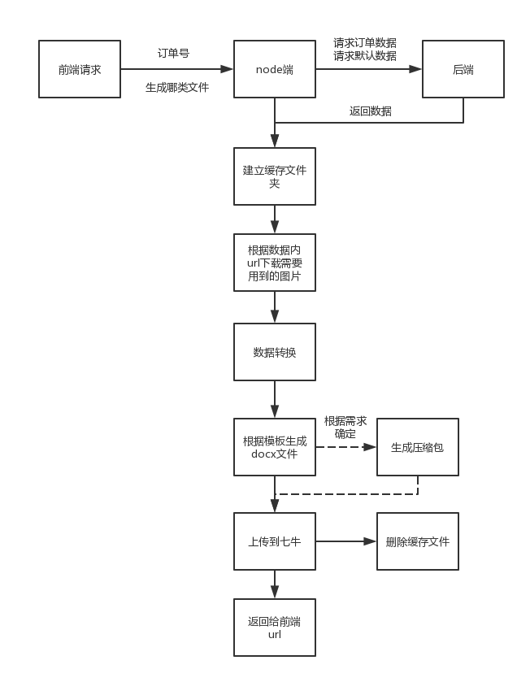
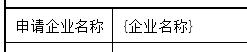
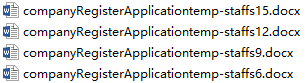
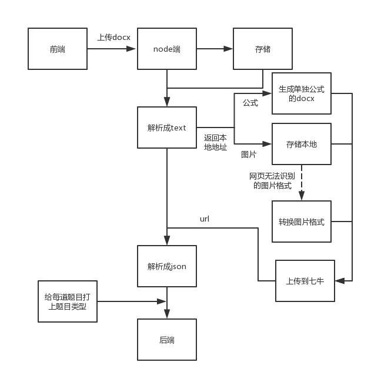
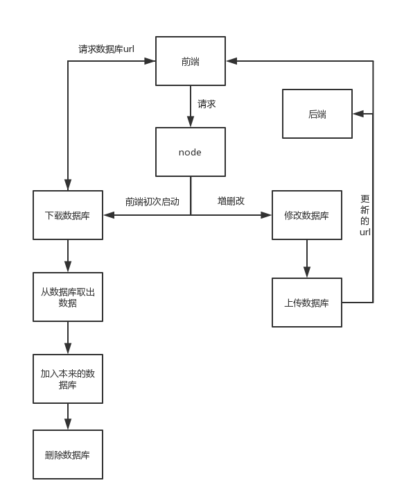

现阶段手头上的工作主要有两块，两份工作均告一段落，但日后可能有新的需求或者异常。所以记录一下两块项目的工作内容和具体的思路，方便其他人维护。
下面列一下具体内容:
- 翼萨项目
- 生成一系列docx文档
- 同洲易题项目
- docx转json（划重点）
- 按数据生成xlsx
- 解析xlsx
- 根据后台题目数据生成简单试卷，格式为docx
- 收藏功能本地数据库库同步
翼萨项目
项目地址
http://develop.coolcto.com/lipengcheng/yisa-consulting-services-portal-frontend
工作内容
从两个数据源取出数据，按照参数不同 ->生成多个文件，并打包，然后上传到七牛云存储，然后将url返回给前端
流程图

项目设计
因为基本上可以说是从一个数据源，然后生成多个文件的过程。
项目采用的是模板替换的方式，从模板的docx文件，标记文字，然后替换其中的标记。
目前在项目中只能标记图片和文字，不能标记表格，标记如图所示
标记文字使用{key}，

标记图片使用{\%key},
优点
- 开发速度快
- 添加的文字随模板文件的字体样式和格式
缺点
- 需要通过hack的方式去应对项目方奇葩的需求
举个栗子，项目放需要根据不同数目的(董事+监事+经理) 生成不同数目的表格。我用了hack的方式，设置了多个不同模板，然后根据js去判断数量，然后选用不同的模板。

看着上面整齐划一的模板，我的内心是崩溃了。
产品经理，在项目开始的时候，不是说好了没有这种诡异的需求了么？
- 需要严格控制模板的格式和变量名
举二个栗子，
针对表格内填充图片的行为，需要提前设置好表格中单元格的宽高，以免产生与预期不匹配
采用统一的数据处理（下文中的dataMiddleHandle.js文件），模板内相应的地方都需要填入对应的变量名
- 无法替换表格
主要文件及位置
|
|
使用的插件
docxtemplater
- 用途： 根据模板和数据生成docx文件, 只能替换模板内的文字
- 地址： https://www.npmjs.com/package/docxtemplater
docxtemplater-image-module
- 用途：docxtemplater的插件，使之能 替换模板内的图片标记
- 地址： https://www.npmjs.com/package/docxtemplater-image-module
Downloader
- 用途：other的下载包，用于下载将替换到模板的图片从七牛下载到本地
- 地址：
Uploader
- 用途：other在七牛官方包上的进一步封装，提供往七牛上传文件的服务。在本项目中，用于将生成的docx和压缩包上传到七牛，然后提供url给前端。
- 地址：
other_client.js
- 用途：other在http请求上的封装，用于给后端发送jsonrpc
- 地址：
易题项目
项目地址
http://develop.coolcto.com/zhujunwei/e_teach_clean
工作内容
- docx转json（划重点）
- 按数据生成xlsx
- 解析xlsx
- 根据后台题目数据生成简单试卷，格式为docx
- 收藏功能本地数据库库同步
docx转json
将带有标记的试题题目的文档转化成json并传到后端。
docx内的格式如下
|
|
流程图

项目设计
本质上，docx就是一个xml文档的zip压缩包。
由于历史遗留原因，目前的总的设计是将docx —>text —>json
个人觉得，这是一个坑比较大的项目，主要集中在以下三点:
主要可能维护的地方
docx转text，目前是流式处理，遇到不能解析的格式或者文字，则忽略，但由于目前所查的docx资料有限，不能保证office不坑我们。目前小规模测试暂无异常。目前转换的结果存储在
path.join(os.tmpdir(),'translate.txt')，可以靠看这个文件去排错。text转json， 大坑。目前由于减小客户在往系统里面撸题目的时候尽量简便，所以判断的逻辑很复杂。目前是按行去读取text，然后用状态和正则去记录和判断题干，小题，小题中的小题。不排除客户会用稀奇古怪的序号去标记小题目，导致正则无法判断。目前转换为json的结果存储在
path.join(os.tmpdir(),'result.json')text转json后给每道题目加上类型。最开始只是前端需要根据这个类型去给每个题目套上不同的样式。这个判断并不可靠，只是应急方案。目前判断依据 是有无()或者__，有无选项或者小问。详细判断逻辑参照
\mewchan\node_modules\TextToJson\addType.js.
主要文件及位置
|
|
docx内xml文档标记的一些参考资料
https://msdn.microsoft.com/en-us/library/office/gg278308.aspx
https://msdn.microsoft.com/en-us/library/office/gg278323.aspx
https://msdn.microsoft.com/en-us/library/office/ee922775(v=office.14).aspx
这个网站是我的主要参考源 http://officeopenxml.com
http://www.docin.com/p-428010508.html
http://www.taguage.com/tag/55f14c4674ebc826528da22f
http://www.bubuko.com/infodetail-1290603.html
http://blog.csdn.net/u010371710/article/details/51966236
使用的插件
multer
- 用途： 解析前端通过dropzone插件上传到node端的文件并存到本地
- 地址： https://www.npmjs.com/package/multer
Uploader
- 用途：other在七牛官方包上的进一步封装，提供往七牛上传文件的服务。在本项目中，用于将解析的docx中的图片和公式（根据公式生成的docx文档）上传到七牛，然后将返回的url塞进json传给后端。
- 地址：
@.fs.unzip()
- 用途： 将docx解压，以便读取其中的xml文档
- 地址: 参照what中mewUtil文档
imagemagick
- 用途：docx内有一些图片和公式的格式为微软官方支持的wmf和emf等图片，不能在前端网页直接显示，所以需要通过插件将这些图片格式转换好。
- 文件路径：
\mewchan\brain\imageconvert.zip - 地址： http://www.imagemagick.org/script/index.php
other_client.js
- 用途：other在http请求上的封装，用于给后端发送jsonrpc
- 地址：
按数据生成xlsx
用于 方便客户下载一个excel文档，从题库生成试卷用到的，在excel内选择需要添加的题目类型，考察的知识点啊。由于excel如果任由客户发挥的话，也挺污的。所以自己写了一个拼接xml然后打包生成excel的。提供
- 单元格可填写文字
- 单元格可使用下拉单选框
- 指定区域外的单元格不能编辑
这三个定制功能.
详细可参考\mewchan\node_modules\excelCreater\README.MD
如果后续有更多的要求，建议使用 exceljs替代
解析xlsx
主要使用的是node-xlsx, 因为mew_js系统目前不支持ES7，所以对其中部分代码从ES7->ES6。然后在外面包了一层，保证取出的数据符合后端需要的格式。具体详见\mewchan\node_modules\xlsx目录
根据后台题目数据生成简单试卷，格式为docx
根据前端发过来的订单号，从后台取出数据，然后生成试卷。
项目设计
目前的需求是从后台取出数据，然后依次下载图片和公式，给题目的选项和小问加上序号（这个依赖于解析docx加上的题目类型）。然后根据数据生成docx；
理论上讲，因为数据都是从后台拿的，源数据是解析docx得到的，不会有过多的问题。
主要文件及位置
|
|
使用的插件
- docxcreater
- 用途： 在office-clippy包基础上改的，用于生成docx。
- 地址：https://www.npmjs.com/package/docxcreater
收藏功能本地数据库库同步
项目设计
用户端界面，有一个收藏题目的功能，方便用户快速的把收藏的题目放到试卷内。由于功能较为简单，且放在后台有点脏，所以放在用户端了。但随之而来的问题就是。用户可能换电脑。所以需要 数据库同步。目前采用的流程详见流程图。
需要注意的两个小细节
前端传给node的数据库更新不及时（服务器依赖于session），前端判定需要库同步是在刷新页面上。所以上传完成的数据库需要通知前端
如果用户在短时间内频繁触发下载和上传数据库逻辑，可能会带来问题。所以分别设定了开关
流程图

主要文件及位置
|
|
使用的插件
- sql.js, mdbc.js, sqlite.js
- 用途： other的操作数据库三件套
- 地址：
- Uploader
- 用途：other在七牛官方包上的进一步封装，提供往七牛上传文件的服务。在本项目中，上传数据库文件。
- 地址：
Downloader
- 用途：other的下载包，用于下载数据库
- 地址：
other_client.js
- 用途：other在http请求上的封装，用于给后端发送jsonrpc
- 地址：
写在最后
之前提到了exceljs包。附上一段自己的测试代码。
当然，也可以直接去看它的官方文档
|
|